%matplotlib inline
import matplotlib.pyplot as plt
import numpy as np
import os
from zipfile import ZipFile
from urllib.request import urlretrieve
ML_100K_URL = "http://files.grouplens.org/datasets/movielens/ml-100k.zip"
ML_100K_FILENAME = ML_100K_URL.rsplit('/', 1)[1]
ML_100K_FOLDER = 'ml-100k'
if not os.path.exists(ML_100K_FILENAME):
print('Downloading %s to %s...' % (ML_100K_URL, ML_100K_FILENAME))
urlretrieve(ML_100K_URL, ML_100K_FILENAME)
if not os.path.exists(ML_100K_FOLDER):
print('Extracting %s to %s...' % (ML_100K_FILENAME, ML_100K_FOLDER))
ZipFile(ML_100K_FILENAME).extractall('.')Sistemas de Recomendación Neuronales con Retroalimentación Explícita
Objetivos:
- Comprender los sistemas de recomendación
- Construir diferentes arquitecturas de modelos utilizando Keras
- Recuperar y visualizar embeddings
- Incorporar información de metadatos como entrada del modelo
Archivo de Calificaciones
Cada línea contiene una película calificada:
- un usuario
- un ítem
- una calificación de 1 a 5 estrellas
import pandas as pd
raw_ratings = pd.read_csv(os.path.join(ML_100K_FOLDER, 'u.data'), sep='\t',
names=["user_id", "item_id", "rating", "timestamp"])
raw_ratings.head()| user_id | item_id | rating | timestamp | |
|---|---|---|---|---|
| 0 | 196 | 242 | 3 | 881250949 |
| 1 | 186 | 302 | 3 | 891717742 |
| 2 | 22 | 377 | 1 | 878887116 |
| 3 | 244 | 51 | 2 | 880606923 |
| 4 | 166 | 346 | 1 | 886397596 |
# how many movies each user saw
user_movie_counts = raw_ratings.groupby('user_id')['item_id'].nunique()
plt.figure(figsize=(8, 5))
plt.hist(user_movie_counts, bins=30, edgecolor='black')
plt.xlabel('Movies seen per user')
plt.ylabel('Number of users');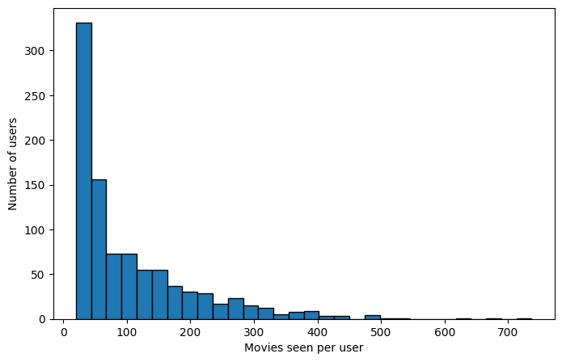
Archivo de Metadatos
El archivo de metadatos contiene información como el nombre de la película o la fecha en que fue estrenada. El archivo de películas incluye columnas que indican los géneros de cada película. Carguemos solo las primeras cinco columnas del archivo usando usecols.
m_cols = ['item_id', 'title', 'release_date', 'video_release_date', 'imdb_url']
items = pd.read_csv(os.path.join(ML_100K_FOLDER, 'u.item'), sep='|',
names=m_cols, usecols=range(5), encoding='latin-1')
items.head()| item_id | title | release_date | video_release_date | imdb_url | |
|---|---|---|---|---|---|
| 0 | 1 | Toy Story (1995) | 01-Jan-1995 | NaN | http://us.imdb.com/M/title-exact?Toy%20Story%2... |
| 1 | 2 | GoldenEye (1995) | 01-Jan-1995 | NaN | http://us.imdb.com/M/title-exact?GoldenEye%20(... |
| 2 | 3 | Four Rooms (1995) | 01-Jan-1995 | NaN | http://us.imdb.com/M/title-exact?Four%20Rooms%... |
| 3 | 4 | Get Shorty (1995) | 01-Jan-1995 | NaN | http://us.imdb.com/M/title-exact?Get%20Shorty%... |
| 4 | 5 | Copycat (1995) | 01-Jan-1995 | NaN | http://us.imdb.com/M/title-exact?Copycat%20(1995) |
# Extract the release year as an integer value:
def extract_year(release_date):
if hasattr(release_date, 'split'):
components = release_date.split('-')
if len(components) == 3:
return int(components[2])
# Missing value marker
return 1920
items['release_year'] = items['release_date'].map(extract_year)
items.hist('release_year', bins=50)array([[<Axes: title={'center': 'release_year'}>]], dtype=object)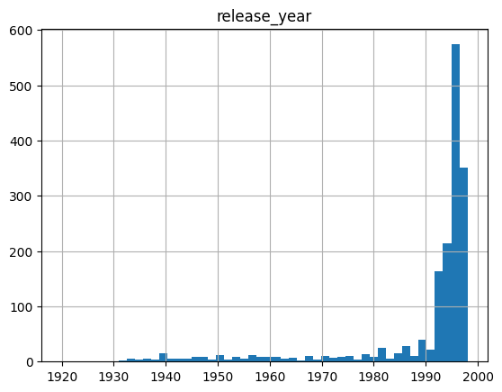
Complemento de los datos originales con los metadatos
all_ratings = pd.merge(items, raw_ratings)
all_ratings.head()| item_id | title | release_date | video_release_date | imdb_url | release_year | user_id | rating | timestamp | |
|---|---|---|---|---|---|---|---|---|---|
| 0 | 1 | Toy Story (1995) | 01-Jan-1995 | NaN | http://us.imdb.com/M/title-exact?Toy%20Story%2... | 1995 | 308 | 4 | 887736532 |
| 1 | 1 | Toy Story (1995) | 01-Jan-1995 | NaN | http://us.imdb.com/M/title-exact?Toy%20Story%2... | 1995 | 287 | 5 | 875334088 |
| 2 | 1 | Toy Story (1995) | 01-Jan-1995 | NaN | http://us.imdb.com/M/title-exact?Toy%20Story%2... | 1995 | 148 | 4 | 877019411 |
| 3 | 1 | Toy Story (1995) | 01-Jan-1995 | NaN | http://us.imdb.com/M/title-exact?Toy%20Story%2... | 1995 | 280 | 4 | 891700426 |
| 4 | 1 | Toy Story (1995) | 01-Jan-1995 | NaN | http://us.imdb.com/M/title-exact?Toy%20Story%2... | 1995 | 66 | 3 | 883601324 |
- el número de usuarios
- el número de ítems
- la distribución de calificaciones
- la popularidad de cada película
min_user_id = all_ratings['user_id'].min()
max_user_id = all_ratings['user_id'].max()
print(min_user_id, max_user_id, all_ratings.shape)1 943 (100000, 9)min_item_id = all_ratings['item_id'].min()
max_item_id = all_ratings['item_id'].max()
print(min_item_id, max_item_id)1 1682all_ratings['rating'].describe()count 100000.000000
mean 3.529860
std 1.125674
min 1.000000
25% 3.000000
50% 4.000000
75% 4.000000
max 5.000000
Name: rating, dtype: float64Popularidad = n° de ratings que recibe una película
popularity = all_ratings.groupby('item_id').size().reset_index(name='popularity')
items = pd.merge(popularity, items)
items.nlargest(10, 'popularity')| item_id | popularity | title | release_date | video_release_date | imdb_url | release_year | |
|---|---|---|---|---|---|---|---|
| 49 | 50 | 583 | Star Wars (1977) | 01-Jan-1977 | NaN | http://us.imdb.com/M/title-exact?Star%20Wars%2... | 1977 |
| 257 | 258 | 509 | Contact (1997) | 11-Jul-1997 | NaN | http://us.imdb.com/Title?Contact+(1997/I) | 1997 |
| 99 | 100 | 508 | Fargo (1996) | 14-Feb-1997 | NaN | http://us.imdb.com/M/title-exact?Fargo%20(1996) | 1997 |
| 180 | 181 | 507 | Return of the Jedi (1983) | 14-Mar-1997 | NaN | http://us.imdb.com/M/title-exact?Return%20of%2... | 1997 |
| 293 | 294 | 485 | Liar Liar (1997) | 21-Mar-1997 | NaN | http://us.imdb.com/Title?Liar+Liar+(1997) | 1997 |
| 285 | 286 | 481 | English Patient, The (1996) | 15-Nov-1996 | NaN | http://us.imdb.com/M/title-exact?English%20Pat... | 1996 |
| 287 | 288 | 478 | Scream (1996) | 20-Dec-1996 | NaN | http://us.imdb.com/M/title-exact?Scream%20(1996) | 1996 |
| 0 | 1 | 452 | Toy Story (1995) | 01-Jan-1995 | NaN | http://us.imdb.com/M/title-exact?Toy%20Story%2... | 1995 |
| 299 | 300 | 431 | Air Force One (1997) | 01-Jan-1997 | NaN | http://us.imdb.com/M/title-exact?Air+Force+One... | 1997 |
| 120 | 121 | 429 | Independence Day (ID4) (1996) | 03-Jul-1996 | NaN | http://us.imdb.com/M/title-exact?Independence%... | 1996 |
items["title"][49]'Star Wars (1977)'indexed_items = items.set_index('item_id')
indexed_items["title"][50]'Star Wars (1977)'all_ratings = pd.merge(popularity, all_ratings)
all_ratings.describe()| item_id | popularity | video_release_date | release_year | user_id | rating | timestamp | |
|---|---|---|---|---|---|---|---|
| count | 100000.000000 | 100000.000000 | 0.0 | 100000.000000 | 100000.00000 | 100000.000000 | 1.000000e+05 |
| mean | 425.530130 | 168.071900 | NaN | 1987.950100 | 462.48475 | 3.529860 | 8.835289e+08 |
| std | 330.798356 | 121.784558 | NaN | 14.169558 | 266.61442 | 1.125674 | 5.343856e+06 |
| min | 1.000000 | 1.000000 | NaN | 1920.000000 | 1.00000 | 1.000000 | 8.747247e+08 |
| 25% | 175.000000 | 71.000000 | NaN | 1986.000000 | 254.00000 | 3.000000 | 8.794487e+08 |
| 50% | 322.000000 | 145.000000 | NaN | 1994.000000 | 447.00000 | 4.000000 | 8.828269e+08 |
| 75% | 631.000000 | 239.000000 | NaN | 1996.000000 | 682.00000 | 4.000000 | 8.882600e+08 |
| max | 1682.000000 | 583.000000 | NaN | 1998.000000 | 943.00000 | 5.000000 | 8.932866e+08 |
all_ratings.head()| item_id | popularity | title | release_date | video_release_date | imdb_url | release_year | user_id | rating | timestamp | |
|---|---|---|---|---|---|---|---|---|---|---|
| 0 | 1 | 452 | Toy Story (1995) | 01-Jan-1995 | NaN | http://us.imdb.com/M/title-exact?Toy%20Story%2... | 1995 | 308 | 4 | 887736532 |
| 1 | 1 | 452 | Toy Story (1995) | 01-Jan-1995 | NaN | http://us.imdb.com/M/title-exact?Toy%20Story%2... | 1995 | 287 | 5 | 875334088 |
| 2 | 1 | 452 | Toy Story (1995) | 01-Jan-1995 | NaN | http://us.imdb.com/M/title-exact?Toy%20Story%2... | 1995 | 148 | 4 | 877019411 |
| 3 | 1 | 452 | Toy Story (1995) | 01-Jan-1995 | NaN | http://us.imdb.com/M/title-exact?Toy%20Story%2... | 1995 | 280 | 4 | 891700426 |
| 4 | 1 | 452 | Toy Story (1995) | 01-Jan-1995 | NaN | http://us.imdb.com/M/title-exact?Toy%20Story%2... | 1995 | 66 | 3 | 883601324 |
train / test split
from sklearn.model_selection import train_test_split
ratings_train, ratings_test = train_test_split(
all_ratings, test_size=0.2, random_state=0)
user_id_train = np.array(ratings_train['user_id'])
item_id_train = np.array(ratings_train['item_id'])
rating_train = np.array(ratings_train['rating'])
user_id_test = np.array(ratings_test['user_id'])
item_id_test = np.array(ratings_test['item_id'])
rating_test = np.array(ratings_test['rating'])len(np.unique(user_id_test))943Retroalimentación explícita: predicción de calificaciones supervisada
Para cada par de (usuario, ítem) se intenta predecir la calificación que el usuario daría al ítem.
Este es el esquema clásico para construir sistemas de recomendación a partir de datos offline utilizando una señal de supervisión explícita.
Predicción de calificaciones como un problema de regresión
El siguiente código implementa la siguiente arquitectura:
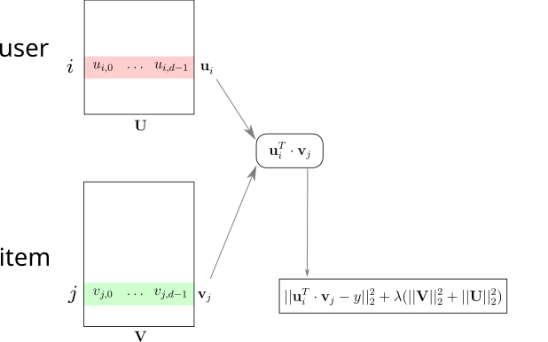
from tensorflow.keras.layers import Embedding, Flatten, Dense, Dropout
from tensorflow.keras.layers import Dot
from tensorflow.keras.models import Model# For each sample we input the integer identifiers
# of a single user and a single item
class RegressionModel(Model):
def __init__(self, embedding_size, max_user_id, max_item_id):
super().__init__()
self.user_embedding = Embedding(output_dim=embedding_size,
input_dim=max_user_id + 1,
name='user_embedding')
self.item_embedding = Embedding(output_dim=embedding_size,
input_dim=max_item_id + 1,
name='item_embedding')
# The following two layers don't have parameters.
self.flatten = Flatten()
self.dot = Dot(axes=1)
def call(self, inputs):
user_inputs = inputs[0]
item_inputs = inputs[1]
user_vecs = self.flatten(self.user_embedding(user_inputs))
item_vecs = self.flatten(self.item_embedding(item_inputs))
y = self.dot([user_vecs, item_vecs])
return y
model = RegressionModel(64, max_user_id, max_item_id)
model.compile(optimizer="adam", loss='mae')# Useful for debugging the output shape of model
initial_train_preds = model.predict([user_id_train, item_id_train])
initial_train_preds.shape2500/2500 ━━━━━━━━━━━━━━━━━━━━ 1s 399us/step
(80000, 1)Error del modelo
Usando initial_train_preds, calcula los errores del modelo: - el error absoluto medio - el error cuadrático medio
La conversión de una serie de pandas a un arreglo numpy suele ser implícita, pero puedes usar rating_train.values para hacerlo explícitamente. Asegúrese de monitorear las dimensiones de cada objeto mediante object.shape.
squared_differences = np.square(initial_train_preds[:,0] - rating_train)
absolute_differences = np.abs(initial_train_preds[:,0] - rating_train)
print("Random init MSE: %0.3f" % np.mean(squared_differences))
print("Random init MAE: %0.3f" % np.mean(absolute_differences))
# You may also use sklearn metrics to do so using scikit-learn:
from sklearn.metrics import mean_absolute_error, mean_squared_error
print("Random init MSE: %0.3f" % mean_squared_error(initial_train_preds, rating_train))
print("Random init MAE: %0.3f" % mean_absolute_error(initial_train_preds, rating_train))Random init MSE: 13.719
Random init MAE: 3.529
Random init MSE: 13.719
Random init MAE: 3.529Monitoreo de ejecución
Keras permite monitorear varias variables durante el entrenamiento.
El objeto history.history devuelto por la función model.fit es un diccionario que contiene la pérdida de entrenamiento ('loss') y la pérdida de validación 'val_loss' después de cada época.
%%time
# Training the model
history = model.fit([user_id_train, item_id_train], rating_train,
batch_size=64, epochs=10, validation_split=0.1,
shuffle=True)Epoch 1/10 1125/1125 ━━━━━━━━━━━━━━━━━━━━ 2s 1ms/step - loss: 3.3031 - val_loss: 1.0389 Epoch 2/10 1125/1125 ━━━━━━━━━━━━━━━━━━━━ 1s 1ms/step - loss: 0.9024 - val_loss: 0.7944 Epoch 3/10 1125/1125 ━━━━━━━━━━━━━━━━━━━━ 1s 998us/step - loss: 0.7565 - val_loss: 0.7696 Epoch 4/10 1125/1125 ━━━━━━━━━━━━━━━━━━━━ 1s 1ms/step - loss: 0.7285 - val_loss: 0.7613 Epoch 5/10 1125/1125 ━━━━━━━━━━━━━━━━━━━━ 1s 1ms/step - loss: 0.7040 - val_loss: 0.7487 Epoch 6/10 1125/1125 ━━━━━━━━━━━━━━━━━━━━ 2s 1ms/step - loss: 0.6831 - val_loss: 0.7406 Epoch 7/10 1125/1125 ━━━━━━━━━━━━━━━━━━━━ 1s 1ms/step - loss: 0.6585 - val_loss: 0.7450 Epoch 8/10 1125/1125 ━━━━━━━━━━━━━━━━━━━━ 1s 1ms/step - loss: 0.6401 - val_loss: 0.7425 Epoch 9/10 1125/1125 ━━━━━━━━━━━━━━━━━━━━ 1s 963us/step - loss: 0.6216 - val_loss: 0.7358 Epoch 10/10 1125/1125 ━━━━━━━━━━━━━━━━━━━━ 1s 920us/step - loss: 0.5941 - val_loss: 0.7403 CPU times: user 14.6 s, sys: 4.05 s, total: 18.6 s Wall time: 12.9 s
plt.plot(history.history['loss'], label='train')
plt.plot(history.history['val_loss'], label='validation')
plt.ylim(0, 2)
plt.legend(loc='best')
plt.title('Loss');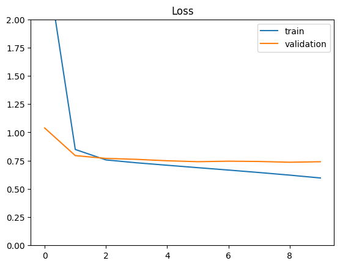
Ahora el modelo está entrenado. El MSE y el MAE es:
def plot_predictions(y_true, y_pred):
plt.figure(figsize=(4, 4))
plt.xlim(-1, 6)
plt.xlabel("True rating")
plt.ylim(-1, 6)
plt.xlabel("Predicted rating")
plt.scatter(y_true, y_pred, s=60, alpha=0.01)from sklearn.metrics import mean_squared_error
from sklearn.metrics import mean_absolute_error
test_preds = model.predict([user_id_test, item_id_test])
print("Final test MSE: %0.3f" % mean_squared_error(test_preds, rating_test))
print("Final test MAE: %0.3f" % mean_absolute_error(test_preds, rating_test))
plot_predictions(rating_test, test_preds)625/625 ━━━━━━━━━━━━━━━━━━━━ 0s 420us/step Final test MSE: 0.903 Final test MAE: 0.735
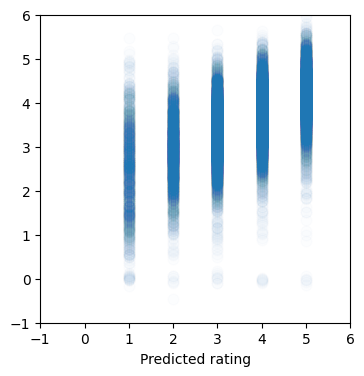
train_preds = model.predict([user_id_train, item_id_train])
print("Final train MSE: %0.3f" % mean_squared_error(train_preds, rating_train))
print("Final train MAE: %0.3f" % mean_absolute_error(train_preds, rating_train))
plot_predictions(rating_train, train_preds)2500/2500 ━━━━━━━━━━━━━━━━━━━━ 1s 324us/step Final train MSE: 0.622 Final train MAE: 0.576
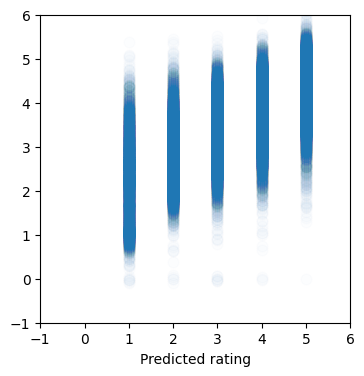
Embeddings
- Es posible obtener los embeddings simplemente utilizando la función de Keras
model.get_weights, la cual retorna todos los parámetros entrenables del modelo. - Los pesos se devuelven en el mismo orden en que fueron construidos en el modelo.
- ¿Cuál es el número total de parámetros?
# weights and shape
weights = model.get_weights()
[w.shape for w in weights][(944, 64), (1683, 64)]model.summary()Model: "regression_model"
┏━━━━━━━━━━━━━━━━━━━━━━━━━━━━━━━━━┳━━━━━━━━━━━━━━━━━━━━━━━━┳━━━━━━━━━━━━━━━┓ ┃ Layer (type) ┃ Output Shape ┃ Param # ┃ ┡━━━━━━━━━━━━━━━━━━━━━━━━━━━━━━━━━╇━━━━━━━━━━━━━━━━━━━━━━━━╇━━━━━━━━━━━━━━━┩ │ user_embedding (Embedding) │ (32, 64) │ 60,416 │ ├─────────────────────────────────┼────────────────────────┼───────────────┤ │ item_embedding (Embedding) │ (32, 64) │ 107,712 │ ├─────────────────────────────────┼────────────────────────┼───────────────┤ │ flatten (Flatten) │ (32, 64) │ 0 │ ├─────────────────────────────────┼────────────────────────┼───────────────┤ │ dot (Dot) │ (32, 1) │ 0 │ └─────────────────────────────────┴────────────────────────┴───────────────┘
Total params: 504,386 (1.92 MB)
Trainable params: 168,128 (656.75 KB)
Non-trainable params: 0 (0.00 B)
Optimizer params: 336,258 (1.28 MB)
user_embeddings = weights[0]
item_embeddings = weights[1]item_id = 181
print(f"Title for item_id={item_id}: {indexed_items['title'][item_id]}")Title for item_id=181: Return of the Jedi (1983)print(f"Embedding vector for item_id={item_id}")
print(item_embeddings[item_id])
print("shape:", item_embeddings[item_id].shape)Embedding vector for item_id=181
[-0.13881622 -0.39279363 -0.4542818 -0.15036431 -0.07021406 -0.25858968
0.3607689 0.35744905 0.40252867 -0.208011 0.08645177 -0.39484358
0.40317655 -0.46558443 -0.39921615 -0.1384621 -0.4389023 -0.2775312
0.02858883 -0.31169248 -0.12770256 -0.4184476 0.01467377 -0.1406344
-0.530684 -0.14433524 0.20867957 -0.09543318 0.07717139 0.22346267
0.48144048 -0.18085825 -0.3629786 0.13675222 0.3730956 0.38976803
0.23840211 -0.21369277 0.23929588 -0.40205938 0.20967337 0.19232649
-0.36350164 -0.0006811 -0.31449977 0.42901668 0.04440717 -0.04404833
-0.25014856 0.30311036 -0.32103804 -0.36157265 -0.17517619 0.48115864
0.27598906 -0.41375706 0.56592494 0.18957186 -0.02910222 0.52749366
0.5087423 0.01733684 -0.37870777 -0.39084676]
shape: (64,)Encontrar ítems similares
Buscar los k ítems más similares a un punto en el espacio de embeddings.
- Escribiremos una función para calcular la similitud del coseno entre dos puntos en el espacio de embeddings.
- Verificaremos las similitudes entre películas populares.
Notas: - Usar np.linalg.norm para calcular la norma de un vector. - La función de numpy np.argsort(...) permite obtener los índices ordenados de un vector. - items["name"][idxs] retorna los nombres de los ítems indexados por el arreglo idxs.
EPSILON = 1e-07 # to avoid division by 0.
def cosine(x, y):
dot_products = np.dot(x, y.T)
norm_products = np.linalg.norm(x) * np.linalg.norm(y)
return dot_products / (norm_products + EPSILON)def print_similarity(item_a, item_b, item_embeddings, titles):
print(titles[item_a])
print(titles[item_b])
similarity = cosine(item_embeddings[item_a],
item_embeddings[item_b])
print(f"Cosine similarity: {similarity:.3}")
print_similarity(50, 181, item_embeddings, indexed_items["title"])Star Wars (1977)
Return of the Jedi (1983)
Cosine similarity: 0.915print_similarity(181, 288, item_embeddings, indexed_items["title"])Return of the Jedi (1983)
Scream (1996)
Cosine similarity: 0.814print_similarity(181, 1, item_embeddings, indexed_items["title"])Return of the Jedi (1983)
Toy Story (1995)
Cosine similarity: 0.832print_similarity(181, 181, item_embeddings, indexed_items["title"])Return of the Jedi (1983)
Return of the Jedi (1983)
Cosine similarity: 1.0def cosine_similarities(item_id, item_embeddings):
"""Compute similarities between item_id and all items embeddings"""
query_vector = item_embeddings[item_id]
dot_products = item_embeddings @ query_vector
query_vector_norm = np.linalg.norm(query_vector)
all_item_norms = np.linalg.norm(item_embeddings, axis=1)
norm_products = query_vector_norm * all_item_norms
return dot_products / (norm_products + EPSILON)
similarities = cosine_similarities(181, item_embeddings)
similaritiesarray([0.0499818 , 0.8316962 , 0.7319682 , ..., 0.7540205 , 0.84227914,
0.6886554 ], dtype=float32)plt.hist(similarities, bins=30);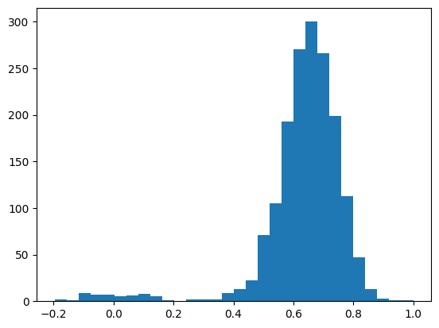
def most_similar(item_id, item_embeddings, titles, top_n=30):
sims = cosine_similarities(item_id, item_embeddings)
sorted_indexes = np.argsort(sims)[::-1]
idxs = sorted_indexes[0:top_n]
return list(zip(idxs, titles[idxs], sims[idxs]))
most_similar(50, item_embeddings, indexed_items["title"], top_n=10)[(50, 'Star Wars (1977)', 0.99999994),
(181, 'Return of the Jedi (1983)', 0.9154532),
(172, 'Empire Strikes Back, The (1980)', 0.9115436),
(1681, 'You So Crazy (1994)', 0.8846905),
(12, 'Usual Suspects, The (1995)', 0.87451434),
(1550, 'Destiny Turns on the Radio (1995)', 0.8683016),
(127, 'Godfather, The (1972)', 0.86770046),
(174, 'Raiders of the Lost Ark (1981)', 0.86769),
(96, 'Terminator 2: Judgment Day (1991)', 0.8612536),
(183, 'Alien (1979)', 0.8609332)]items[items['title'].str.contains("Star Trek")]| item_id | popularity | title | release_date | video_release_date | imdb_url | release_year | |
|---|---|---|---|---|---|---|---|
| 221 | 222 | 365 | Star Trek: First Contact (1996) | 22-Nov-1996 | NaN | http://us.imdb.com/M/title-exact?Star%20Trek:%... | 1996 |
| 226 | 227 | 161 | Star Trek VI: The Undiscovered Country (1991) | 01-Jan-1991 | NaN | http://us.imdb.com/M/title-exact?Star%20Trek%2... | 1991 |
| 227 | 228 | 244 | Star Trek: The Wrath of Khan (1982) | 01-Jan-1982 | NaN | http://us.imdb.com/M/title-exact?Star%20Trek:%... | 1982 |
| 228 | 229 | 171 | Star Trek III: The Search for Spock (1984) | 01-Jan-1984 | NaN | http://us.imdb.com/M/title-exact?Star%20Trek%2... | 1984 |
| 229 | 230 | 199 | Star Trek IV: The Voyage Home (1986) | 01-Jan-1986 | NaN | http://us.imdb.com/M/title-exact?Star%20Trek%2... | 1986 |
| 379 | 380 | 116 | Star Trek: Generations (1994) | 01-Jan-1994 | NaN | http://us.imdb.com/M/title-exact?Star%20Trek:%... | 1994 |
| 448 | 449 | 117 | Star Trek: The Motion Picture (1979) | 01-Jan-1979 | NaN | http://us.imdb.com/M/title-exact?Star%20Trek:%... | 1979 |
| 449 | 450 | 63 | Star Trek V: The Final Frontier (1989) | 01-Jan-1989 | NaN | http://us.imdb.com/M/title-exact?Star%20Trek%2... | 1989 |
most_similar(227, item_embeddings, indexed_items["title"], top_n=10)[(227, 'Star Trek VI: The Undiscovered Country (1991)', 1.0000001),
(228, 'Star Trek: The Wrath of Khan (1982)', 0.8696675),
(1046, 'Malice (1993)', 0.8671569),
(230, 'Star Trek IV: The Voyage Home (1986)', 0.8560517),
(1483, 'Man in the Iron Mask, The (1998)', 0.8526243),
(354, 'Wedding Singer, The (1998)', 0.8507102),
(94, 'Home Alone (1990)', 0.8461486),
(1431, 'Legal Deceit (1997)', 0.84468913),
(257, 'Men in Black (1997)', 0.8440615),
(1339, 'Stefano Quantestorie (1993)', 0.8437165)]Las similitudes no siempre tienen sentido: el número de valoraciones es bajo y el embedding no captura automáticamente las relaciones semánticas en ese contexto. Se podrían obtener mejores representaciones con mayor cantidad de valoraciones, menos sobreajuste en los modelos o quizás con una función de pérdida más adecuada, como aquellas basadas en retroalimentación implícita.
Visualización de embeddings usando TSNE
from sklearn.manifold import TSNE
item_tsne = TSNE(perplexity=30).fit_transform(item_embeddings)import matplotlib.pyplot as plt
plt.figure(figsize=(10, 10))
plt.scatter(item_tsne[:, 0], item_tsne[:, 1]);
plt.xticks(()); plt.yticks(());
plt.show()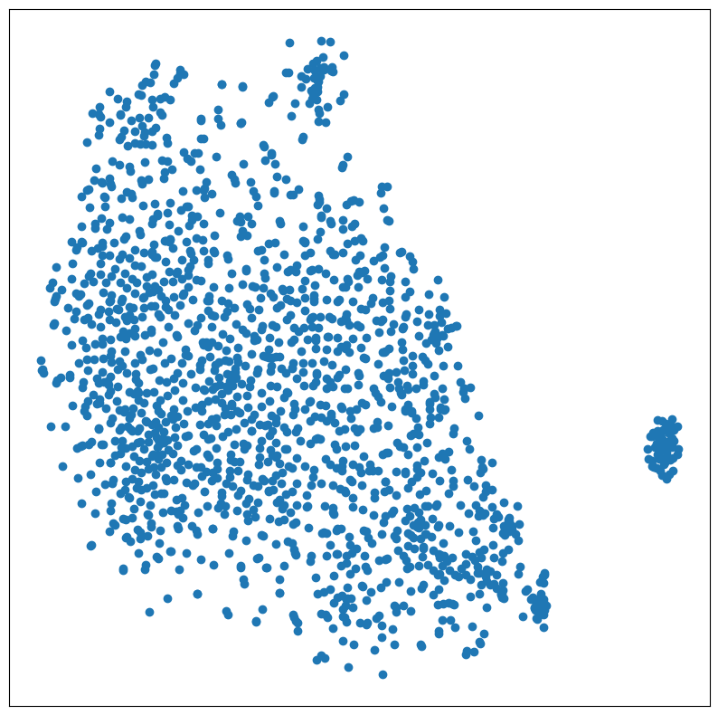
# %pip install -q plotlyimport plotly.express as px
tsne_df = pd.DataFrame(item_tsne, columns=["tsne_1", "tsne_2"])
tsne_df["item_id"] = np.arange(item_tsne.shape[0])
tsne_df = tsne_df.merge(items.reset_index())
px.scatter(tsne_df, x="tsne_1", y="tsne_2",
color="popularity",
hover_data=["item_id", "title",
"release_year", "popularity"])Unable to display output for mime type(s): application/vnd.plotly.v1+jsonAlternativamente - UMAP Uniform Manifold Approximation and Projection:
# %pip install umap-learnimport umap
item_umap = umap.UMAP().fit_transform(item_embeddings)
plt.figure(figsize=(10, 10))
plt.scatter(item_umap[:, 0], item_umap[:, 1]);
plt.xticks(()); plt.yticks(());
plt.show()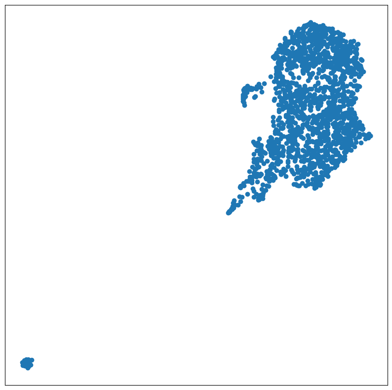
Sistema de recomendación profundo
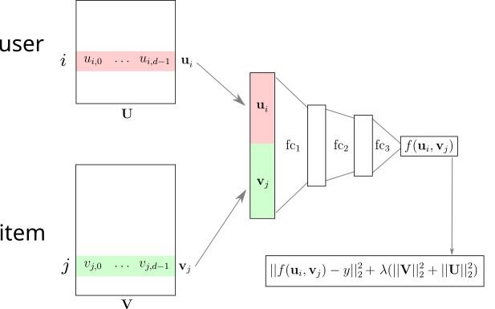
from tensorflow.keras.layers import Concatenate# For each sample we input the integer identifiers
# of a single user and a single item
class DeepRegressionModel(Model):
def __init__(self, embedding_size, max_user_id, max_item_id):
super().__init__()
self.user_embedding = Embedding(
output_dim=embedding_size,
input_dim=max_user_id + 1,
name='user_embedding'
)
self.item_embedding = Embedding(
output_dim=embedding_size,
input_dim=max_item_id + 1,
name='item_embedding'
)
# The following two layers don't have parameters.
self.flatten = Flatten()
self.concat = Concatenate()
## possible error: Dropout too high, preventing any training
self.dropout = Dropout(0.5)
self.dense1 = Dense(64, activation="relu")
self.dense2 = Dense(1)
def call(self, inputs, training=False):
user_inputs = inputs[0]
item_inputs = inputs[1]
user_vecs = self.flatten(self.user_embedding(user_inputs))
item_vecs = self.flatten(self.item_embedding(item_inputs))
input_vecs = self.concat([user_vecs, item_vecs])
y = self.dropout(input_vecs, training=training)
y = self.dense1(y)
y = self.dropout(y, training=training)
y = self.dense2(y)
return y
model = DeepRegressionModel(64, max_user_id, max_item_id)
model.compile(optimizer='adam', loss='mae')
initial_train_preds = model.predict([user_id_train, item_id_train])2500/2500 ━━━━━━━━━━━━━━━━━━━━ 1s 360us/step
%%time
history = model.fit([user_id_train, item_id_train], rating_train,
batch_size=64, epochs=10, validation_split=0.1,
shuffle=True)Epoch 1/10 1125/1125 ━━━━━━━━━━━━━━━━━━━━ 2s 1ms/step - loss: 1.5973 - val_loss: 0.7786 Epoch 2/10 1125/1125 ━━━━━━━━━━━━━━━━━━━━ 1s 1ms/step - loss: 0.8779 - val_loss: 0.7660 Epoch 3/10 1125/1125 ━━━━━━━━━━━━━━━━━━━━ 1s 1ms/step - loss: 0.8470 - val_loss: 0.7598 Epoch 4/10 1125/1125 ━━━━━━━━━━━━━━━━━━━━ 1s 1ms/step - loss: 0.8178 - val_loss: 0.7583 Epoch 5/10 1125/1125 ━━━━━━━━━━━━━━━━━━━━ 1s 1ms/step - loss: 0.7942 - val_loss: 0.7470 Epoch 6/10 1125/1125 ━━━━━━━━━━━━━━━━━━━━ 1s 1ms/step - loss: 0.7759 - val_loss: 0.7495 Epoch 7/10 1125/1125 ━━━━━━━━━━━━━━━━━━━━ 1s 1ms/step - loss: 0.7647 - val_loss: 0.7427 Epoch 8/10 1125/1125 ━━━━━━━━━━━━━━━━━━━━ 1s 1ms/step - loss: 0.7494 - val_loss: 0.7424 Epoch 9/10 1125/1125 ━━━━━━━━━━━━━━━━━━━━ 1s 1ms/step - loss: 0.7423 - val_loss: 0.7355 Epoch 10/10 1125/1125 ━━━━━━━━━━━━━━━━━━━━ 1s 1ms/step - loss: 0.7344 - val_loss: 0.7359 CPU times: user 15.5 s, sys: 3.9 s, total: 19.4 s Wall time: 13.5 s
plt.plot(history.history['loss'], label='train')
plt.plot(history.history['val_loss'], label='validation')
plt.ylim(0.5, 0.8)
plt.legend(loc='best')
plt.title('Loss');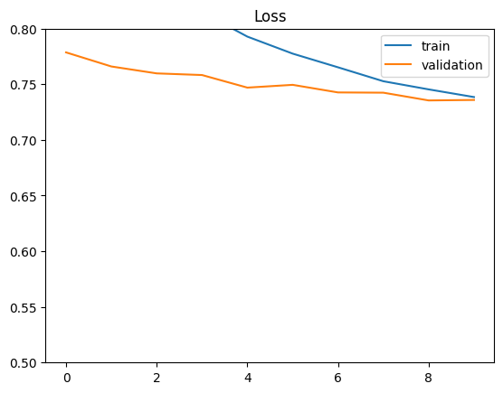
train_preds = model.predict([user_id_train, item_id_train])
print("Final train MSE: %0.3f" % mean_squared_error(train_preds, rating_train))
print("Final train MAE: %0.3f" % mean_absolute_error(train_preds, rating_train))2500/2500 ━━━━━━━━━━━━━━━━━━━━ 1s 348us/step Final train MSE: 0.835 Final train MAE: 0.706
test_preds = model.predict([user_id_test, item_id_test])
print("Final test MSE: %0.3f" % mean_squared_error(test_preds, rating_test))
print("Final test MAE: %0.3f" % mean_absolute_error(test_preds, rating_test))625/625 ━━━━━━━━━━━━━━━━━━━━ 0s 359us/step Final test MSE: 0.889 Final test MAE: 0.735
El desempeño de este modelo no es significativamente mejor que el modelo anterior, pero se puede notar que la diferencia entre el conjunto de entrenamiento y el de prueba es menor, probablemente gracias al uso de dropout, que ayuda a reducir el sobreajuste y mejora la generalización.
Además, este modelo es más flexible en el sentido de que se puede extender para incluir metadatos y construir sistemas de recomendación híbridos.